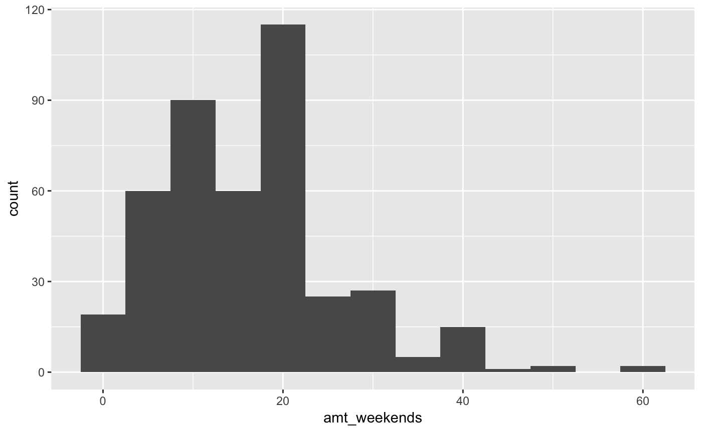
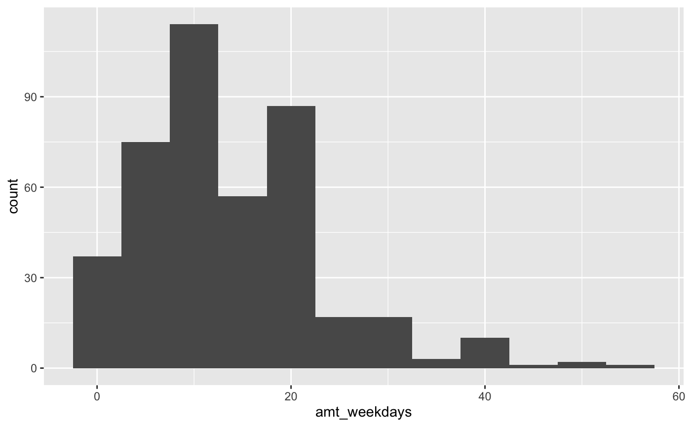
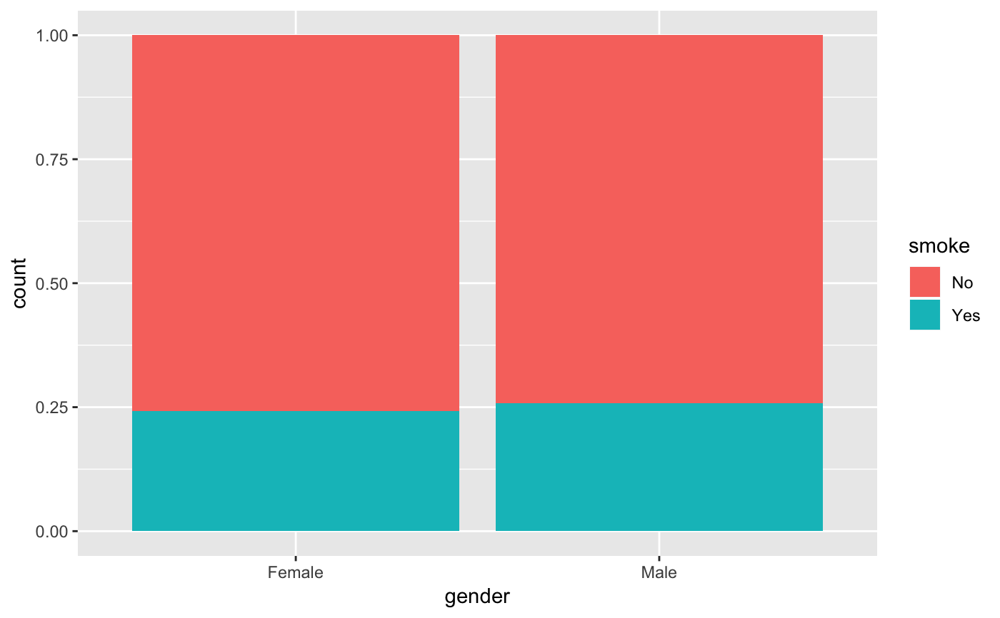
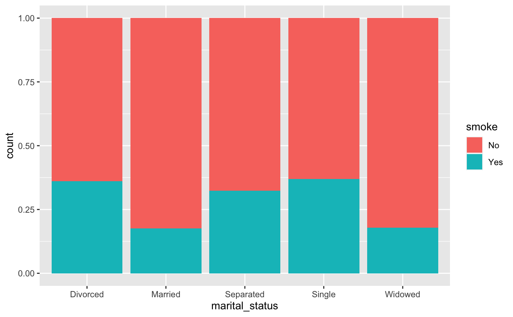

Survey data on smoking habits from the UK. The data set can be used for analyzing the demographic characteristics of smokers and types of tobacco consumed.
smoking
A tibble with 1691 observations on the following 12 variables.
Gender with levels Female and Male.
Age.
Marital status with levels Divorced,
Married, Separated, Single and Widowed.
Highest education level with levels
A Levels, Degree, GCSE/CSE, GCSE/O Level,
Higher/Sub Degree, No Qualification, ONC/BTEC and
Other/Sub Degree
Nationality with levels British, English,
Irish, Scottish, Welsh, Other, Refused
and Unknown.
Ethnicity with levels Asian, Black,
Chinese, Mixed, White and Refused
Unknown.
Gross income with levels Under 2,600,
2,600 to 5,200, 5,200 to 10,400, 10,400 to 15,600,
15,600 to 20,800, 20,800 to 28,600, 28,600 to 36,400,
Above 36,400, Refused and Unknown.
Region with levels London, Midlands & East Anglia,
Scotland, South East, South West, The North
and Wales
Smoking status with levels No and Yes
Number of cigarettes smoked per day on weekends.
Number of cigarettes smoked per day on weekdays.
Type of cigarettes smoked with levels Packets,
Hand-Rolled, Both/Mainly Packets and Both/Mainly Hand-Rolled
National STEM Centre, Large Datasets from stats4schools, http://www.nationalstemcentre.org.uk/elibrary/resource/3624/large-datasets-from-stats4schools.
#> Warning: Removed 1270 rows containing non-finite values (stat_bin).#> Warning: Removed 1270 rows containing non-finite values (stat_bin).